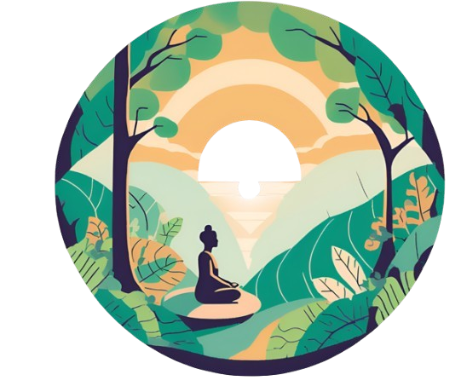

Your Journey to Mental Clarity Begins Here

Mind Oasis
Home
Products
Quiz
Your Thoughts
Videos
Podcast
Contacts
More
OCD (Obsessive-Compulsive Disorder) Survey
Take our survey to learn more about your OCD symptoms and identify any potential concerns.
1. Do you experience unwanted, intrusive thoughts that cause distress?
Yes
No
2. How often do these intrusive thoughts occur?
Never
Rarely
Occasionally
Frequently
Almost constantly
3. Do you feel the need to perform certain actions or rituals to reduce anxiety caused by these thoughts?
Yes
No
4. How often do you engage in these rituals or compulsive behaviors?
Never
Rarely
Occasionally
Frequently
Almost constantly
5. Do your compulsions take up a significant amount of your time each day?
Yes
No
6. Do your obsessive thoughts or compulsive behaviors interfere with your daily life?
Yes
No
7. Do you avoid certain situations, people, or places due to your OCD symptoms?
Yes
No
8. Have you tried to stop or control your obsessions or compulsions?
Yes
No
9. Do you experience distress or frustration when you are unable to perform the rituals or compulsions?
Yes
No
10. On a scale of 1 to 10, how much do your OCD symptoms affect your quality of life?
1-3 (Minimal)
4-6 (Moderate)
7-10 (Severe)
Submit Survey